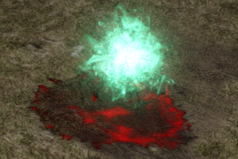
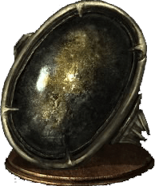
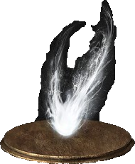

Souls
Collecting Souls
In Dark Souls 3, every character carries souls. The stronger they are, the more souls they carry. It is your goal as the player to steal the souls of your enemies by killing them. Souls in this game are the primary currency, and you'll be using them for every kind of upgrade from leveling up your main stats to upgrading your weapons and shields to buying items from vendors. Bottom line, you want as many souls as you can get because you get stronger when you use them.
You can see how many souls you have by looking at the bottom right corner of your game screen.
Losing Souls
Souls are not permanent. Just like how you can steal the souls of enemies, if you die you will lose all of the souls you've accumulated up until that point. But don't despair just yet, they're not completely lost. All of your souls will be sitting in a puddle of blood with a large green soul orb hovering above it back in the location where you died. Fight your way back to that location and you'll be able to pick up all of the souls you lost. However, if you die again along the way towards your souls, all of those souls will be permanently lost.
If you have a lot of souls on the line and feel like you have a considerable chance of dying before you get back to them, don't worry! Put on a Ring of Sacrifice, which will keep you from losing your souls if you die again. Keep in mind that each Ring of Sacrifice can only be used once, if you die while you're wearing one its effect will trigger and then it will break. You only get one extra chance per ring!
Soul Items
Sometimes you'll find items called: "Soul of a (insert name here)". These are Soul Items. If you use them, you will destroy the item and gain a certain number of souls. It is best to save Soul Items until you need the extra souls to level up or buy something as the items will stay in your inventory when you die but your souls will not.
